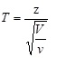
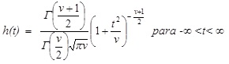

T de Student:
El uso de la distribucion t para hacer estimaciones se requiere siempre que el tamanno de la muestra sea menor o igual a 30
y la derviacion estandar de la poblacion no se conozca. Al utilizar la distribucion t se parte del supuesto de que la poblacion es normal
o aproximadamente normal (Levin et. al., 2004).
Como definicion de esta distribucion, Walpole et. al., (1999) sennala que: sea Z una variable aleatoria normal estandar
y V una variable aleatoria chi-cuadrada con v grados de libertad. Si Z y V son independientes,
entonces la distribucion de la variable aleatoria T, donde:

esta dada por: 